早上 Torre de Madrid 退房。行李寄在大廳,人先走。「退房 ≠ 真的離開」 —— 飯店其實還會再見一次,晚上回來拿行李才會真的告別。但今天從這一步開始,我們已經在馬德里的最後幾個小時裡了。
太陽今天決定出來。空氣是那種馬德里 5 月特有的脾氣:有太陽時熱,沒太陽時風很冷。內陸高原的真實寫照,Day 7 三天的雨終於收尾後,Day 8 改成「**陰晴一秒切換體感**」。Scalpers 長袖救命。
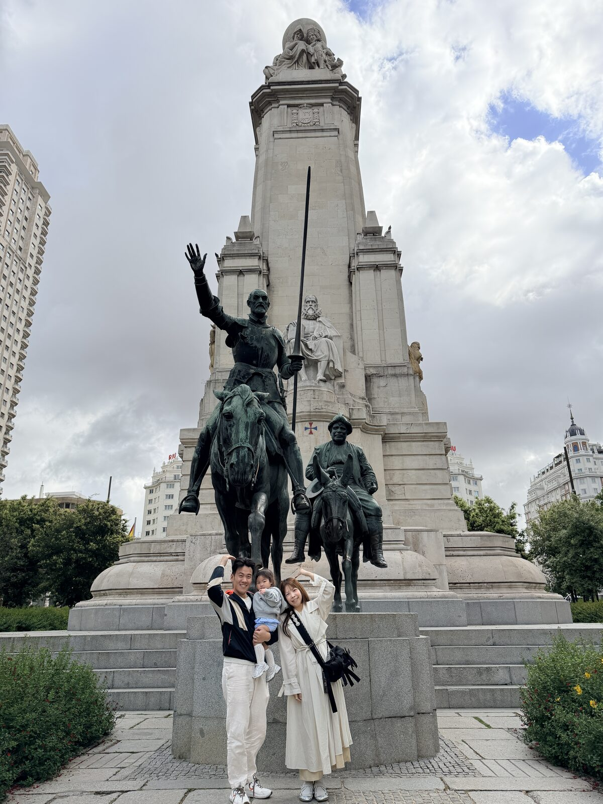
昨天的戰利品表寫著「兩年後」,今天就反悔。
歐洲 5 月的氣溫,讓所有「兩年後」的衣服都變成「今晚」。
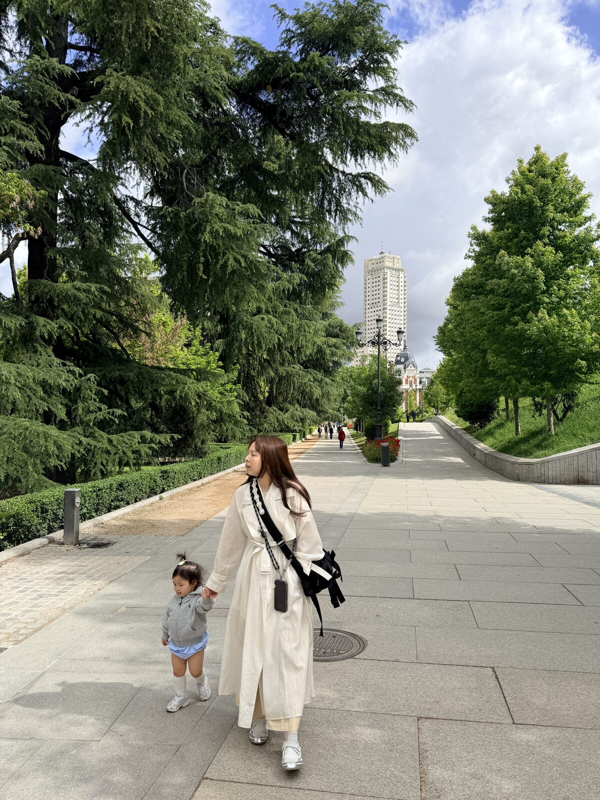
Day 7 § Six 我們在 Plaza de España 地鐵月台,讀到整面 Bibliometro 文學牆上的《唐吉訶德》第十八章。昨天在月台讀第十八章,今天本人就站在他腳下。馬德里這座城市對文學的尊重,從地下印到地上,從石碑刻到青銅。
Day 7 § Nine 黃金時刻,我們站在 Templo de Debod 觀景台,遠望王宮輪廓。
Day 8 § Two,我們走進那條輪廓裡。
Palacio Real de Madrid —— 歐洲現存最大的王宮,以樓地板面積算 135,000 m²,擁有 3,418 個房間。建在 9 世紀阿拉伯城堡 Alcázar 原址(就是 Day 7 § Ten「時空摺疊」那段阿拉伯城牆的同一個建築群),1734 年聖誕夜大火燒毀原 Alcázar,Felipe V(波旁王朝第一任、路易十四的孫子)決定重建,1738 動工、1764 完工。
現任國王 Felipe VI 不住這裡 —— 平常住郊區的 El Pardo 小宮殿,這裡只用於國事典禮、國宴、外賓接見。但我們等等發現,今天國旗是升的 —— 西班牙王宮傳統:國王人在 = 降旗,國王不在 = 升旗,因為旗代表王權留守。
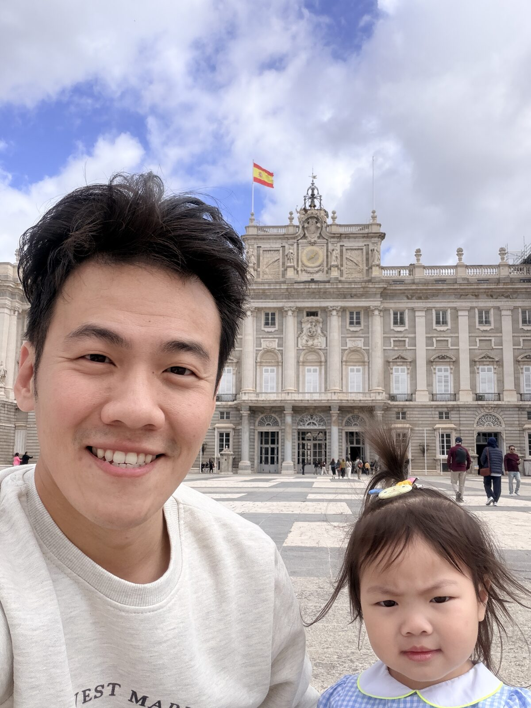
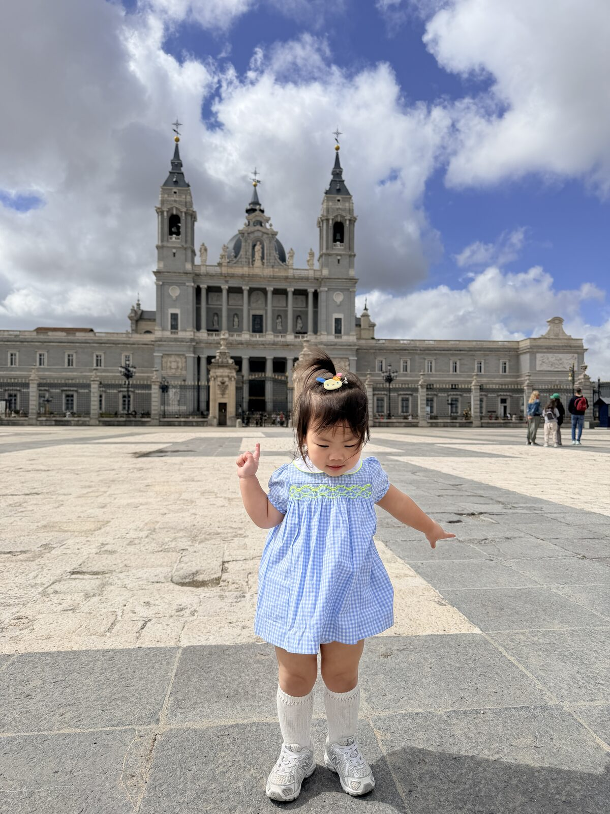
右邊那座是 Catedral de la Almudena —— 馬德里唯一的主教座堂,也是全西班牙唯一由教宗親自祝聖的大教堂(1993 教宗 John Paul II 親自來)。1883 動工 → 1993 完工,蓋了 110 年。
馬德里身為首都,卻直到 1993 才有自己的主教座堂 —— 因為西班牙天主教中心歷史上一直是 Toledo,不是 Madrid。Almudena 完工那年,小米的爸媽都還沒出生。
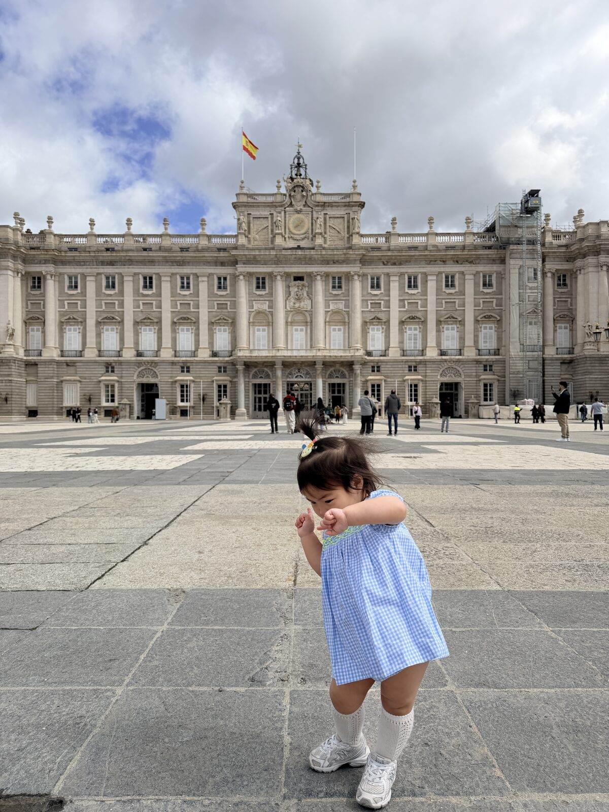
進王宮第一個震撼點 —— Escalera Principal 主樓梯。建築師受 Carlos III 國王指示:「我要能騎馬上樓」,於是這座階梯踏面特別寬,真的可以騎馬。階梯平台上方,是 1763 年 Corrado Giaquinto 的濕壁畫《Religion Protected by Spain · 西班牙保護宗教》。兩側 18 世紀金色燭台 + 紅絨布 + 西班牙王徽。
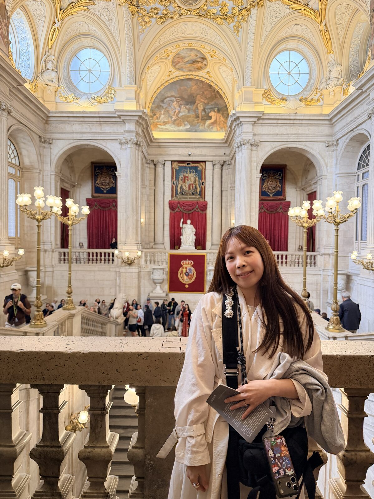
往內走到 Salón de Columnas 圓柱廳。牆上有一塊不大的石碑,寫著一段話:
En este Salón de Columnas del Palacio Real de Madrid
se firmó el Tratado de Adhesión de España a las Comunidades Europeas
el día 12 de junio de 1985
Presidió la ceremonia Su Majestad El Rey Don Juan Carlos I
翻譯:1985 年 6 月 12 日,西班牙加入歐洲共同體(EEC,今天歐盟前身)的條約,在這個圓柱廳簽署,儀式由 Juan Carlos I 國王主持。
那一刻 Franco 獨裁結束剛滿 10 年。西班牙正式從歐洲邊陲的孤立者,重新走回歐洲的核心。今天我們持台灣護照、用歐元、在申根區自由移動,某種意義上,Schengen + Euro 都從這一張 1985 的紙開始算起。
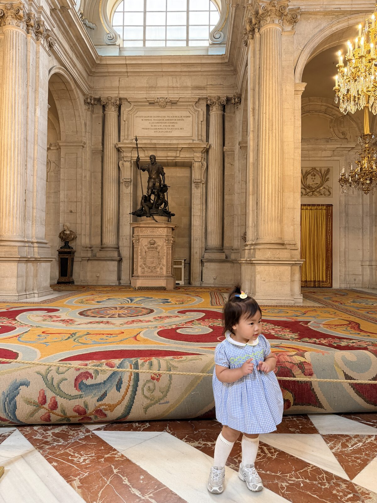
王宮裡面繞,小米的視線跟我們完全不同。我們看天頂濕壁畫,她看地上閃亮的東西。
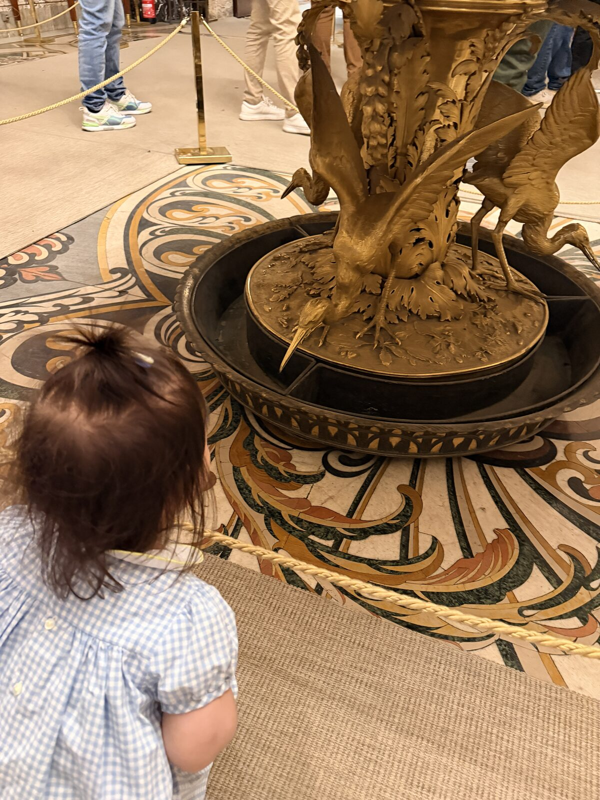
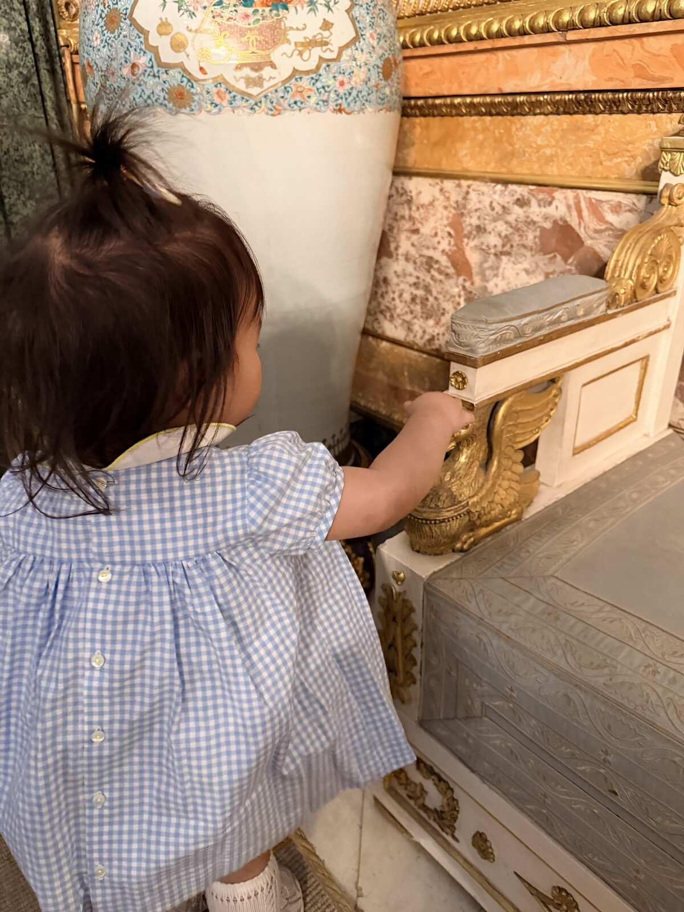
王宮裡面有非常多清代乾隆/嘉慶時期外銷瓷 —— 當年波旁王朝透過馬尼拉大帆船(Galeón de Manila,1565-1815,跨越太平洋連接墨西哥阿卡普科 ↔ 菲律賓馬尼拉的貿易路線)收藏。中國的瓷器先到馬尼拉,再從馬尼拉跨太平洋到墨西哥,再從墨西哥跨大西洋到塞維利亞,最後送進馬德里王宮。
小米在 2026 年伸手要摸的這個鎏金天鵝,腳邊的廣彩瓶,可能跑了三個大洋才來到她面前。Day 7 § Five 我們花 RL 的錢「為兩年後的小米預付一份記憶」,Day 8 § Four 換西班牙王宮花了三個世紀預付給她一段。
Day 5 Billieblush 失守、Day 6 Miu Miu 構不到帽子、Day 6 LV 塗鴉、Day 7 outlet 太陽眼鏡霸氣坐姿、Day 7 抱比熊狗、Day 7 追鴿子。Day 8 王宮編號:伸手要摸 250 年前的鎏金鳥。她沒摸到,因為旁邊有保全。
王宮的高潮有兩個房間,氣質完全相反。
Capilla Real 是 Ventura Rodríguez 1750 年代設計的,黑色大理石柱 + 描金灰泥 + 大紅地毯。主祭壇是 Mengs 畫的聖母升天,華蓋上方有金色鴿子光環(聖神)。我們站的位置,正是西班牙國王做彌撒的位置。
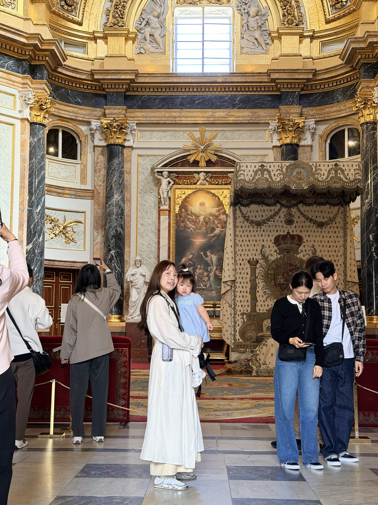
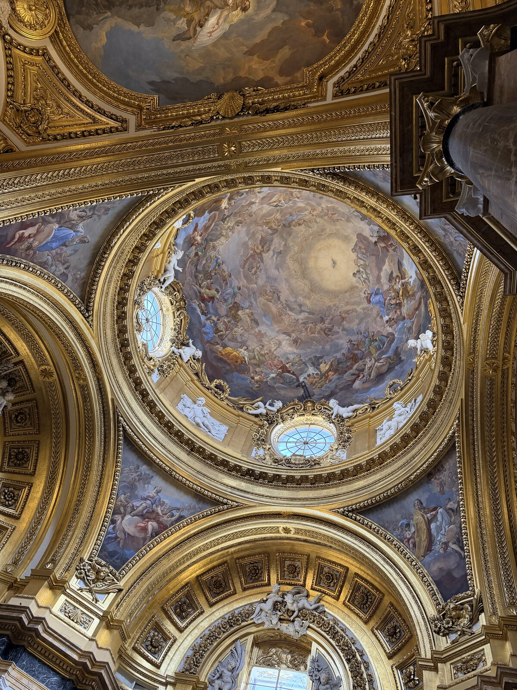
禮拜堂出來幾個房間之後,是整個王宮最重要的房間 —— Salón del Trono 王座廳。四隻鎏金巨獅守護 Carlos III 的黃金王座,階梯紅絨布 + 銀製獅腳扶手。天花板是 Giambattista Tiepolo 1764 年的《西班牙君主制的榮耀》—— 威尼斯大師最後遺作之一。
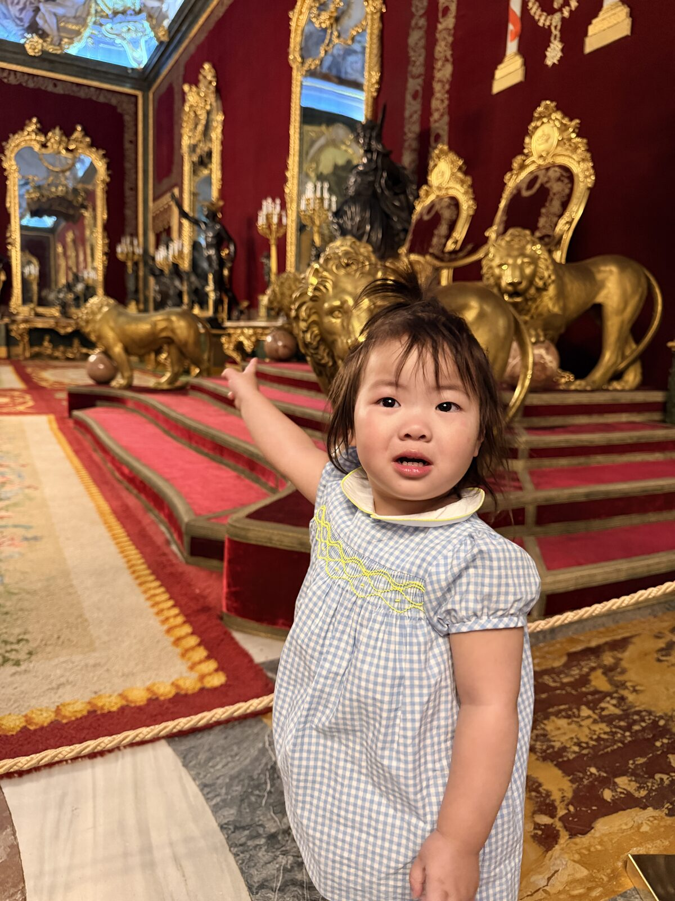
禮拜堂讓你抬頭看,看 1750 的雲。
王座廳讓你低頭怕,怕 1764 的獅。
王宮在兩個房間之內,完成了它對權力的展示。
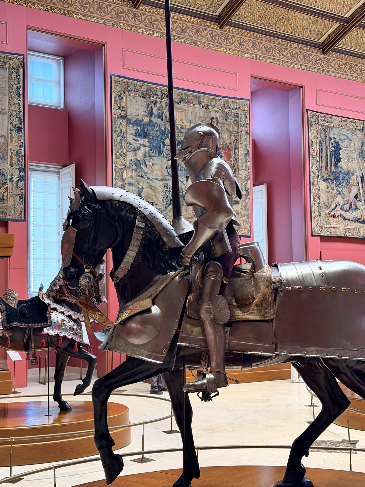
王宮西側獨立館是 Real Armería 皇家兵器博物館 —— 被認為是世界第三大兵器收藏,僅次於維也納跟倫敦塔。粉紅牆 + 古典壁毯 + 鎧甲騎士的反差,完全 cinematic。
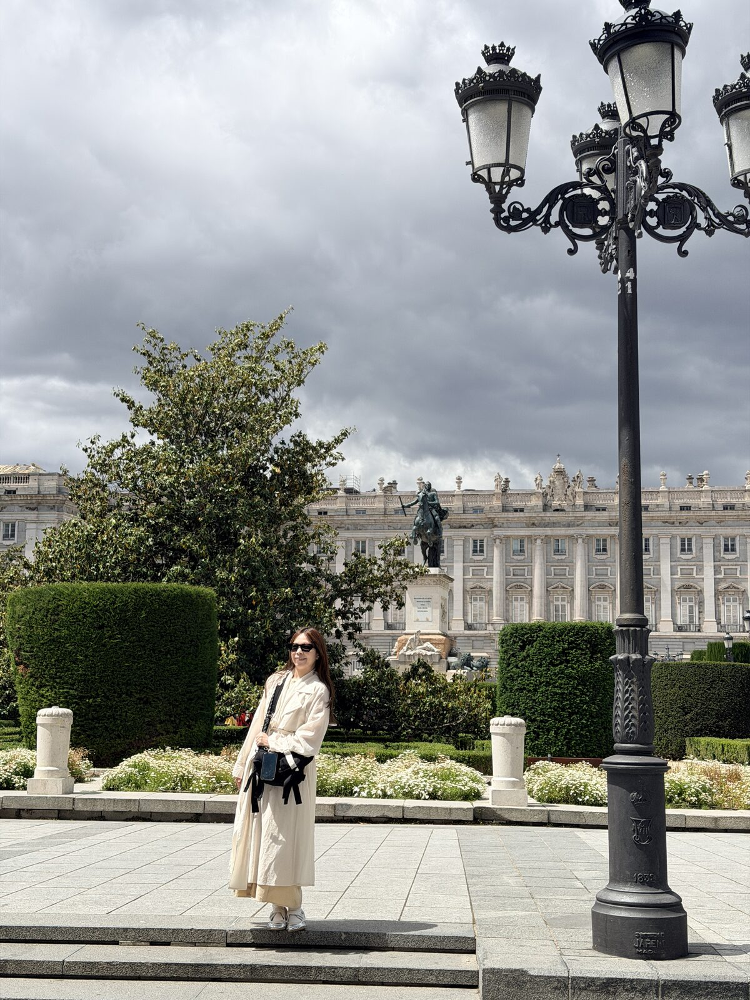
從王宮東面廣場 Plaza de Oriente 走出,正中央是 Felipe IV 騎馬青銅像,1640 年完工。看似平凡,但這座像隱藏了 17 世紀歐洲最強的跨界合作:
這是世界第一座馬抬起前腳的青銅騎馬像。技術上極難,因為整匹馬+國王的重量全靠馬尾跟兩條後腿支撐。Diego Velázquez(那個畫《宮娥》的西班牙宮廷畫家)畫了設計圖,寄到佛羅倫斯後 —— 伽利略本人幫忙算了力學。Tuscan 鑄造廠執行,1640 完工後運到馬德里。
所以這座像同時集合了:西班牙最偉大的畫家、義大利物理之父、跟一個試圖讓馬飛起來的瘋狂技術問題。
王宮出來,飯店方向走 5 分鐘就是 Faborit Leganitos · Plaza de España 2 —— 西班牙連鎖 fresh coffee house,屬於 Rodilla 集團(西班牙國民三明治連鎖),走輕食路線。算是西班牙版的 Pret a Manger,馬德里機場 T1/T4 都有店。
13:58。我們點外帶,因為「衝機場」實錘。
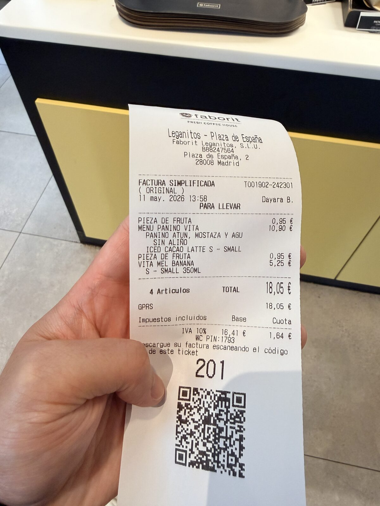
| 品項 | 價格 |
|---|---|
| Menu Panino Vita(鮪魚芥末酪梨,Sin Aliño)+ Iced Cacao Latte | 10,90 € |
| Vita Mel Banana(蜂蜜香蕉果昔 350ml) | 5,25 € |
| Pieza de Fruta × 2 | 1,90 € |
| Total · 4 件 | 18,05 € |
結果發現 —— 我們只拿了一根香蕉。多算 0,95 €。但飛機在跑道上等,理論這 0,95 € 的時間我們沒有。
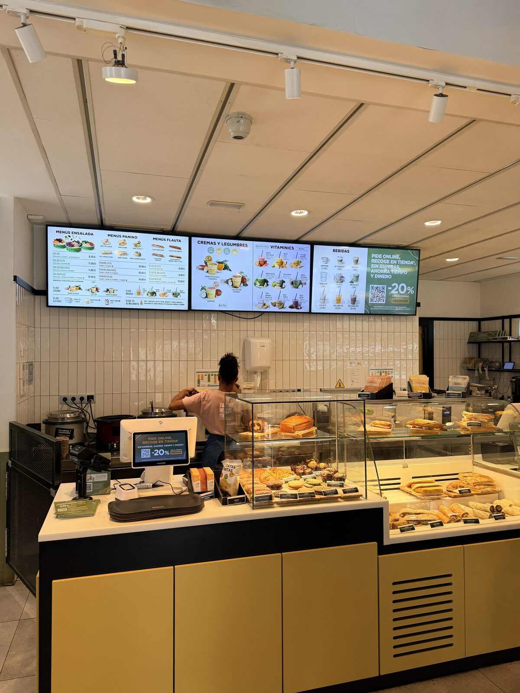
抵達 Barajas T2 後,小米已經睡著,飯店帶來的麵包沒吃。在 T2 想找個位置坐下啃麵包,結果走進去是 Le Coq by The Kikiri Co. —— Areas SAU 集團(西班牙最大機場餐飲)旗下的西班牙國旗配色速食店。Le Coq 在法文是「公雞」,kikirikí 是西班牙語「咕咕咕」的擬聲詞 —— 全店叫「公雞 by 公雞叫公司」。
沒地方坐 + 服務生 expectant 的眼神 = 不得不點。一份 11,35 € 的 Bolognese 義大利麵,本來只是要佔位的,結果真的超好吃,小米嘴邊一圈紅醬,吃到沒空理我們。
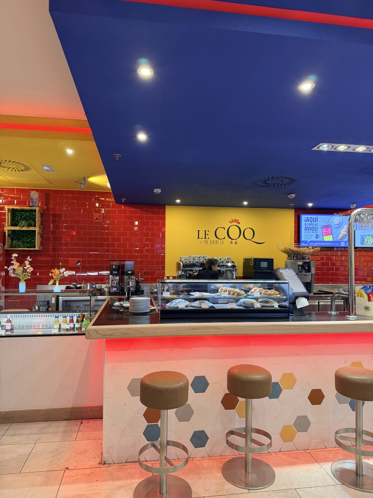
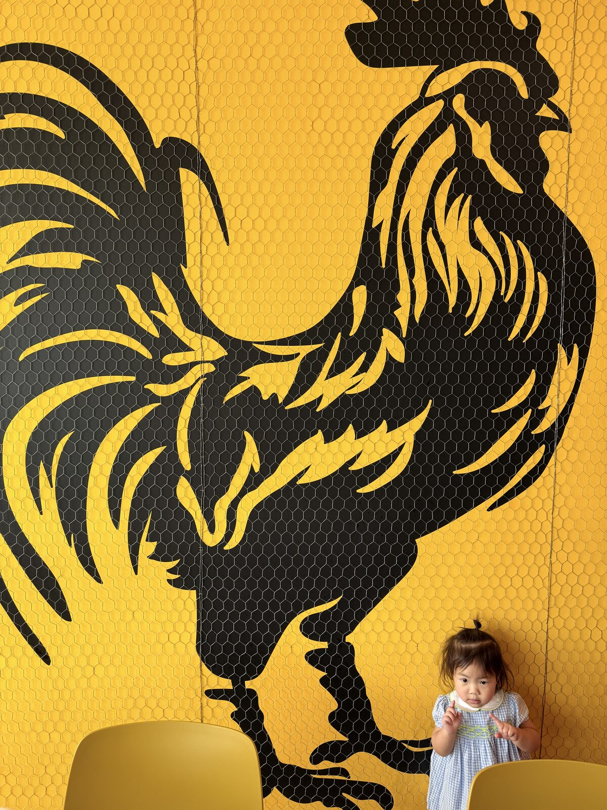
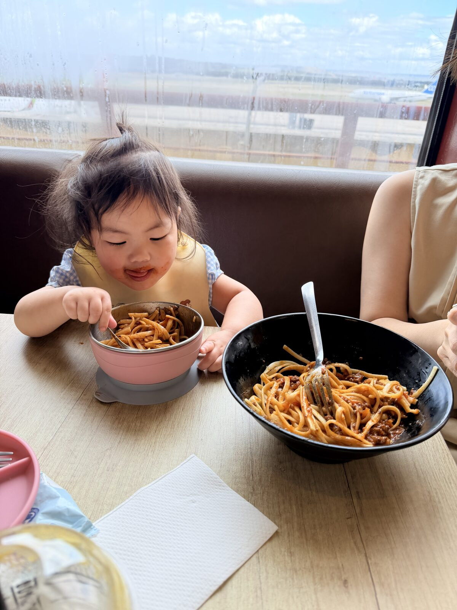
結帳完拿收據才發現第二件怪事:收據印著「PARA LLEVAR(外帶)」,但我們明明用陶瓷大黑碗 + 小米專屬粉色防滑碗,在窗邊內用了 30 分鐘。
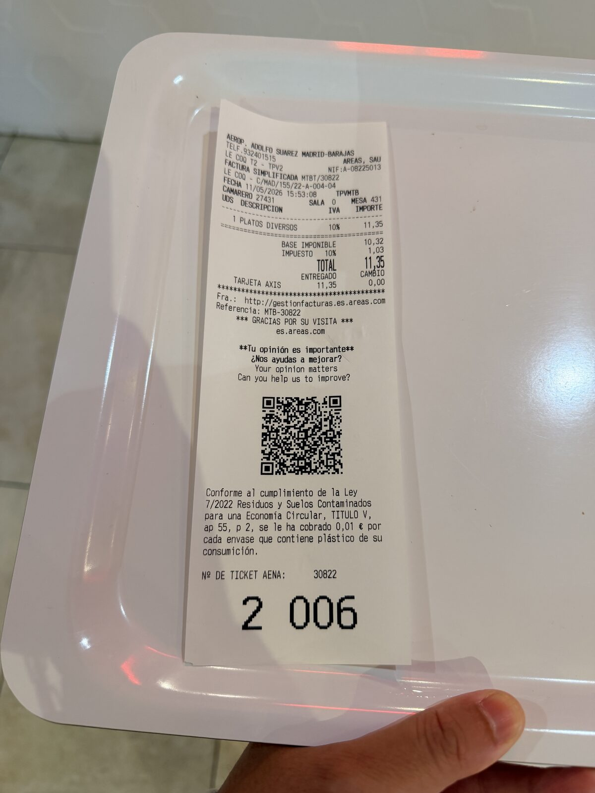
告別馬德里的方式,就是被收了一份不存在的香蕉,
跟一份不存在的外帶 ——
而我們都不在乎了,因為飛機在跑道上等。
結帳出 Le Coq,T2 候機區轉角發現 —— Children's Playroom · Zona Infantil。免費。Madrid Barajas 是少數歐洲機場提供免費兒童遊戲間的(T1/T2/T4 都有),裡面有玩具車、積木、毛玻璃手繪塗鴉牆(畫滿星星、月亮、熱氣球、紙飛機、泰迪熊、犀牛喝奶瓶)。
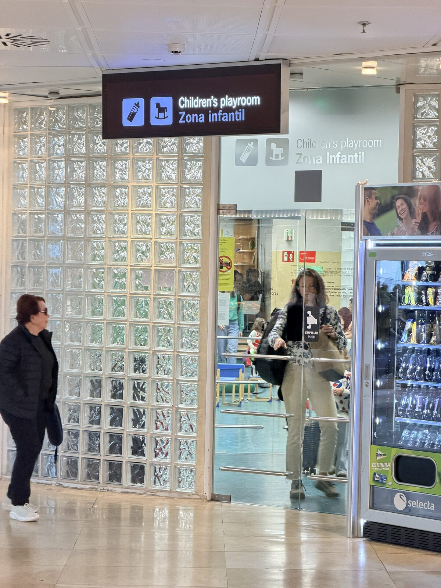
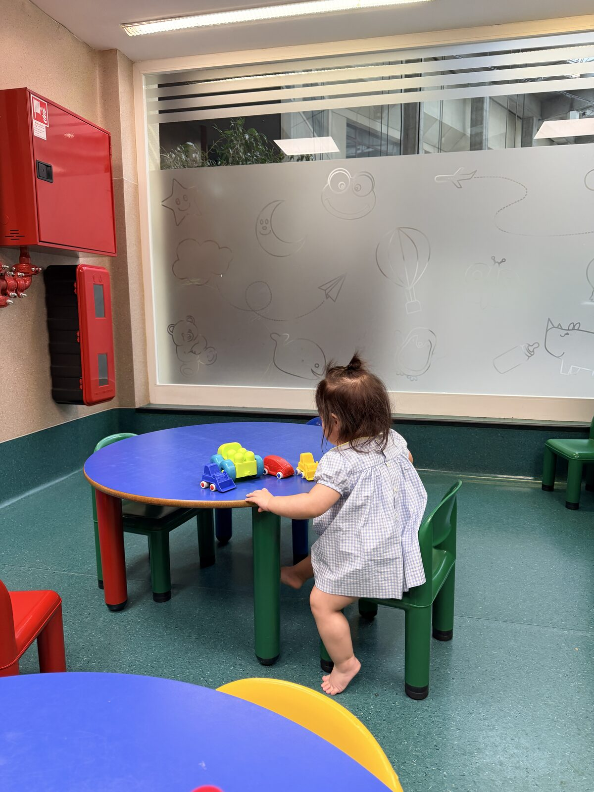
玩瘋 30 分鐘。Day 8 從早上的 Plaza de España 唐吉訶德、王宮 3,418 房、伽利略的馬,降回到一個 1 歲 11 個月的小孩,赤腳排玩具車。歐洲學分今天比較豐富。
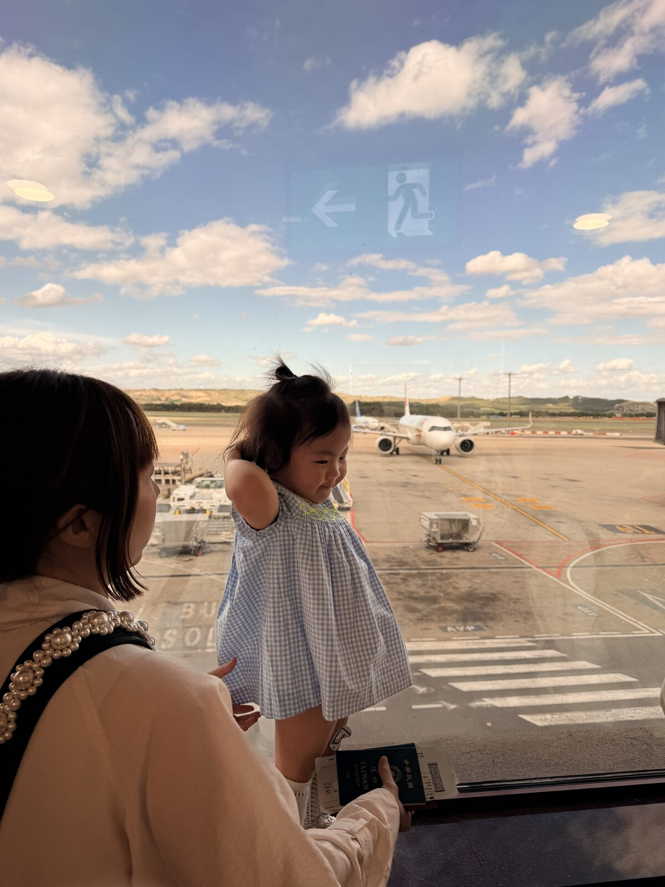
登機橋上,阿米跟小米並肩站。玻璃斜骨架把畫面切成三角形,身後是 TAP 機身上的 P 跟 A。Felipe VI 的旗還高高升著 —— 因為他今天不在馬德里。我們也即將不在。
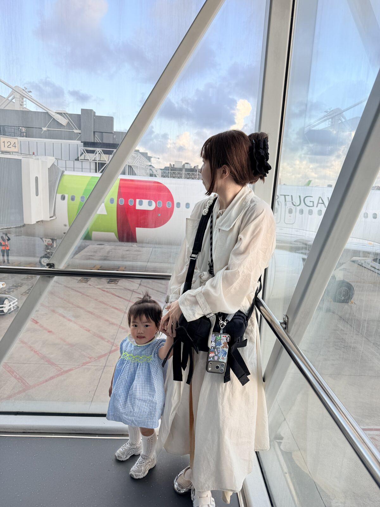
降落前,機窗外是一座超長的拉索橋,橫跨整個 Tagus 河(Rio Tejo)河口。
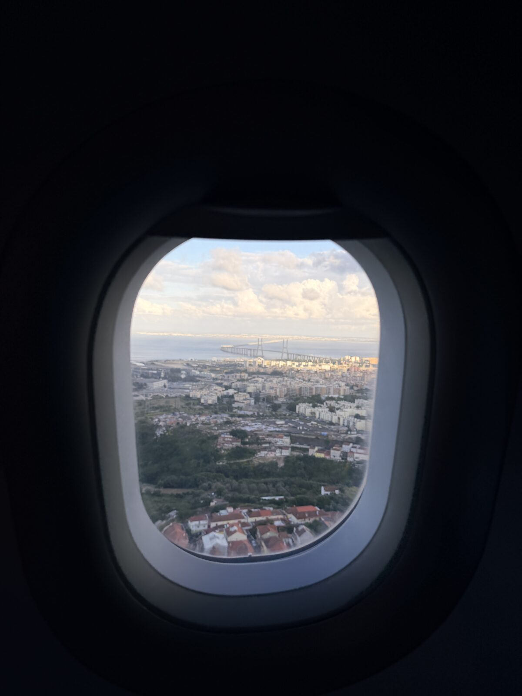
Uber 從 Humberto Delgado 機場開往 Avenida da Liberdade —— 葡萄牙法律規定 12 歲以下/135 公分以下必須坐兒童座椅,Bolt/Uber 葡萄牙版有 Family 選項自帶座椅。小米五點式安全帶綁起來,窗外是葡萄牙黃色計程車跟紅色公車站。
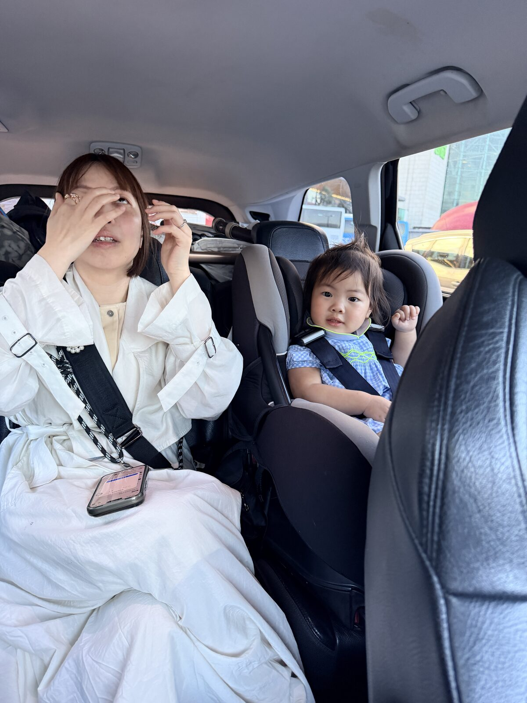
到市區,第一個視覺信號是路燈。馬德里的路燈頂上是皇冠+王徽,里斯本的路燈頂上是船+海錨+守護聖人 São Vicente。傳說 1173 年聖 Vicente 的遺骸從南方被船運到里斯本時,兩隻烏鴉一路在桅杆上守護。船 + 烏鴉,從此成為里斯本的城市符號 —— 印在路燈上、市徽上、人孔蓋上。
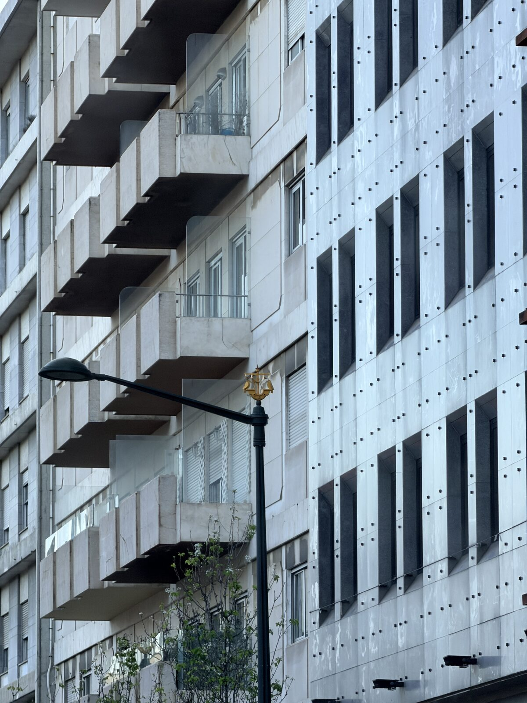
Uber 經過 Praça Marquês de Pombal 龐巴爾侯爵廣場 —— Avenida da Liberdade 自由大道的起點,里斯本市中心地標。中央高柱上是龐巴爾侯爵(Sebastião José de Carvalho e Melo, 1699-1782),腳邊一頭獅子(代表強權)。
1755 年 11 月 1 日,里斯本大地震 + 海嘯 + 大火三連擊,摧毀全城 85% 以上。死亡估計 4-5 萬。龐巴爾侯爵以鐵腕在 6 年內重建里斯本 —— 把市中心 Baixa 改成棋盤格網狀街道、抗震木構建築、寬廣大道。世界上第一個現代化都市規劃案例,被稱為 pombaline 風格。
沒有龐巴爾,就沒有今天的里斯本。我們抵達里斯本看到的第一個雕像,是把這座城從廢墟救回來的人。
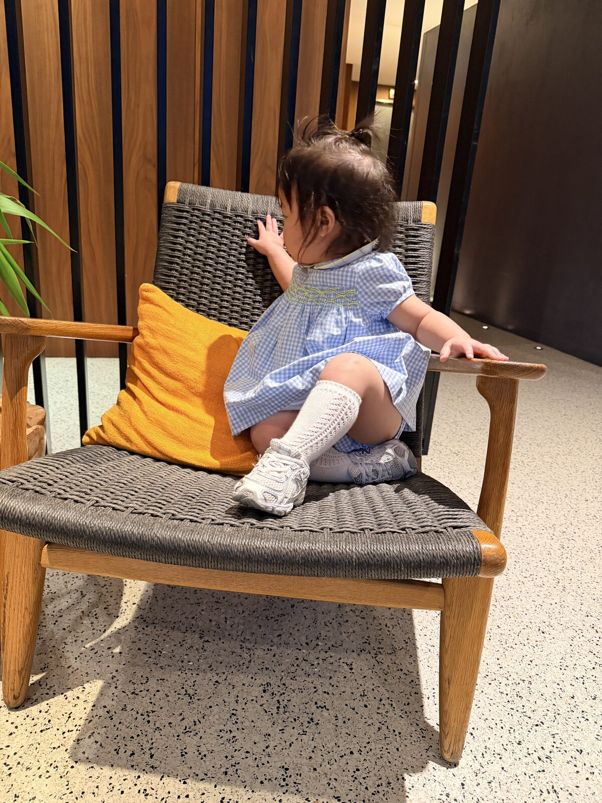
馬德里給我們的最後一個雕像,是塞萬提斯 —— 寫故事的人。
里斯本給我們的第一個雕像,是龐巴爾 —— 把廢墟變回城市的人。
兩個首都都用一個雕像送/接我們。
Bolt 停在 Altis Prime · Hotel de Apartamentos 門口。Altis 集團旗下的公寓式酒店,Rua Rodrigo da Fonseca。當初訂這個就是因為公寓式空間大、有廚房 + 客廳 + 臥室分區,適合帶 1 歲 11 個月的小米。
招牌不鏽鋼字體 + 米色石材牆 + 葡萄牙經典 calçada portuguesa 鵝卵石人行道(那個黑白小方塊石磚 = 里斯本身份證)。
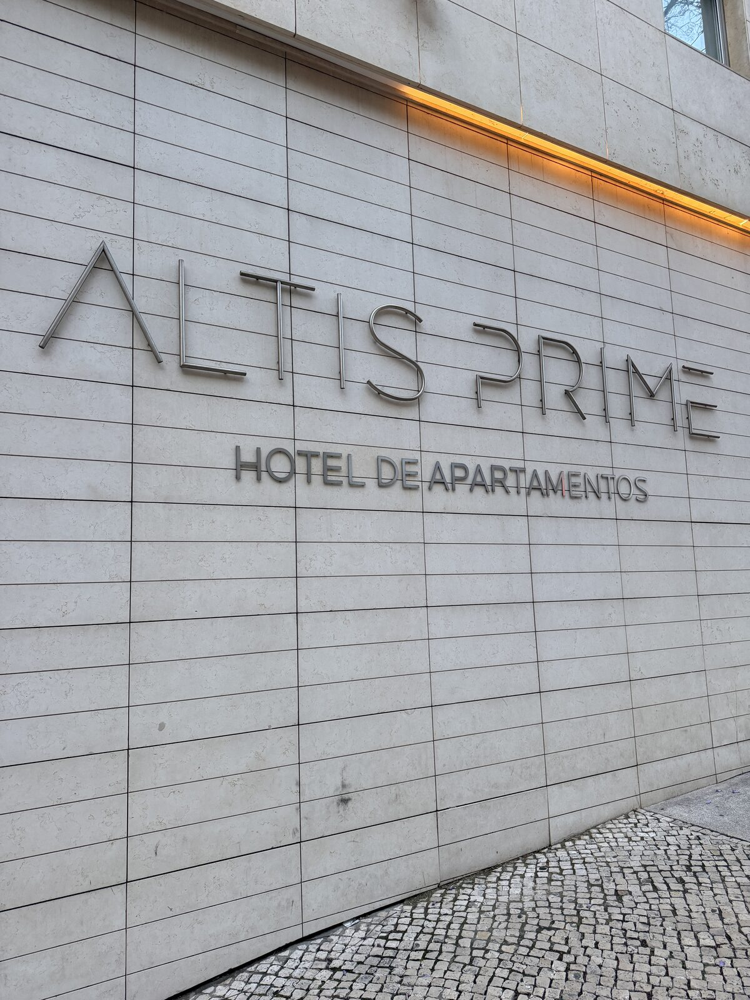
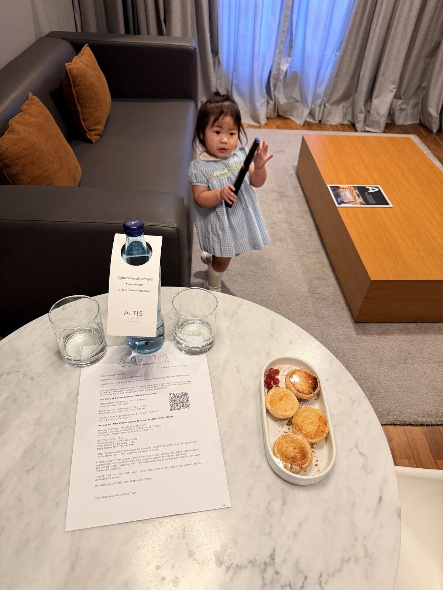
Day 7 § Three Bonpoint 藍色 Pierre Paulin Pumpkin 椅 → Day 7 § Three 棕色皮椅(太陽眼鏡霸氣坐姿)→ Day 8 § Ten 灰色藤編 Hans Wegner 風椅。小米的歐洲「霸佔名椅」mini series 三件套完成。
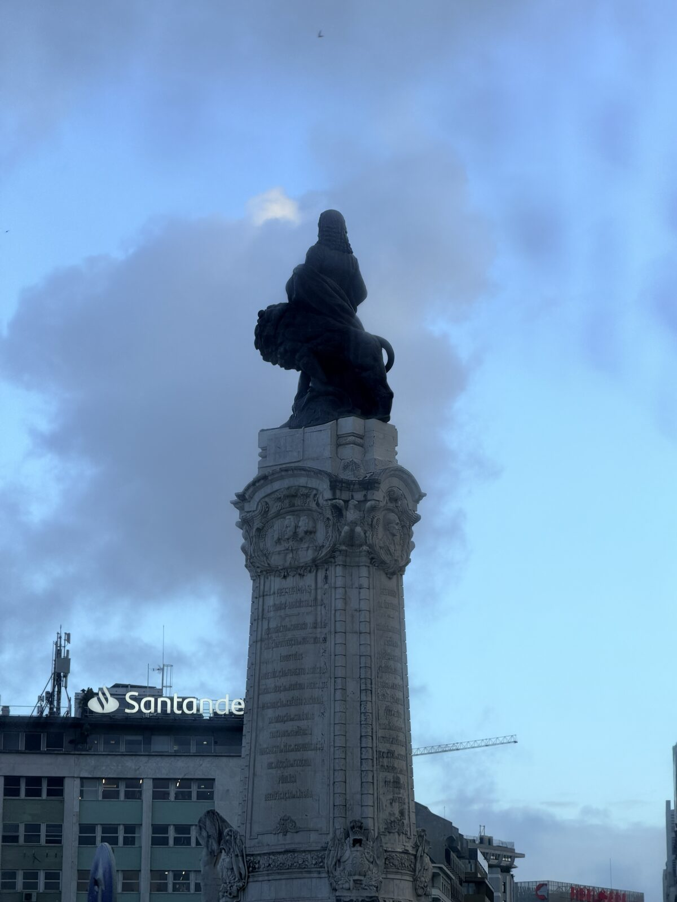
葡萄牙國民甜點,18 世紀初 Jerónimos Monastery(熱羅尼莫斯修道院)的修士發明。發明原因:當時修士用蛋白漿熨衣服(對,真的用蛋白上漿),剩下大量蛋黃 → 拿來做奶蛋撻。1834 自由派革命後修道院關閉,修士把秘方賣給附近糖廠 → 1837 開了 Pastéis de Belém 至今仍是傳奇店。
所以飯店這四顆是葡萄牙國家送的見面禮。我們開心切開、撒了肉桂粉、咬一口 ——
「飯店蛋塔很普,台灣的好吃非常多。」
蛋塔本家,第一回合先輸一分。但這是飯店 welcome amenity,不是專業店家。明天 Belém 1837 本店再戰。
22 點,真的晚才出門吃晚餐。從飯店往北走兩分鐘就是 Madame Bistrot · Pizza-Bistrot-Cocktails。法國老闆開的法義 bistro,招牌是慢發酵 + Iberian flour 的拿坡里風披薩。Google 4.8 / 2000+ 評論,TheFork 9.3/10。
葡萄牙第一晚,我們本來想吃 Bacalhau(鱈魚) —— 但 Madame 沒鱈魚,只有披薩跟義大利麵。小米已經到累的臨界點,選最近的兩分鐘抵達。第一晚的鱈魚,留給明天的 Belém。
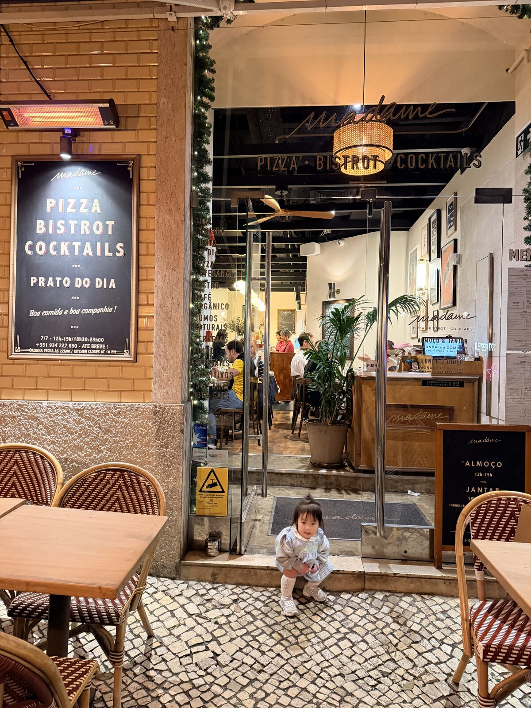
蕁麻疹還沒完全解禁,菜單巡禮一遍:Joana 有 mortadella、Andréa 有 presunto、Maria 有 anchovies、Claire 有 Azores 熟成起司加 prosciutto、Caroline 有 prosciutto chips + Brie —— 全部都地雷。安全島只剩三個:Marguerite(經典)、Jade(burrata + arugula)、Sofia(白蘑菇 + 香菇 + Taleggio + 檸檬皮)、Matilde(松露 + 蘑菇)。
最後點 Sofia 14 €。
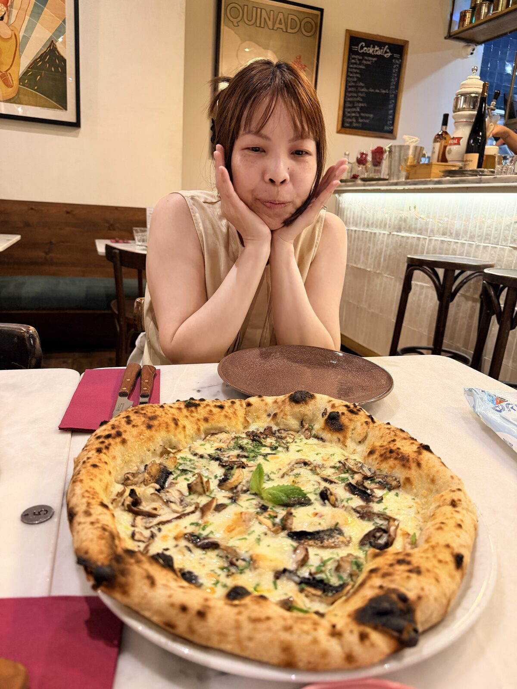
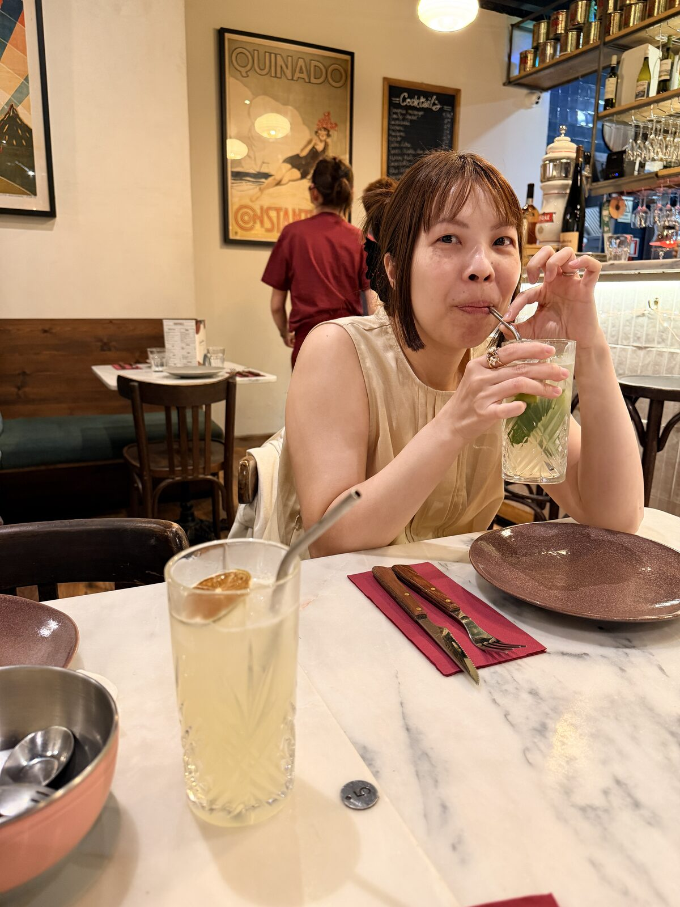
Day 5 巴塞 Vinitus mojito sin → Day 7 馬德里 Asgaya Tanqueray 0.0 → Day 8 里斯本 Madame Mojito S。三杯無酒精,三個城市,三家不同 vibe 的餐廳 —— 蕁麻疹週的隱形主線,在 Day 8 完整收齊。
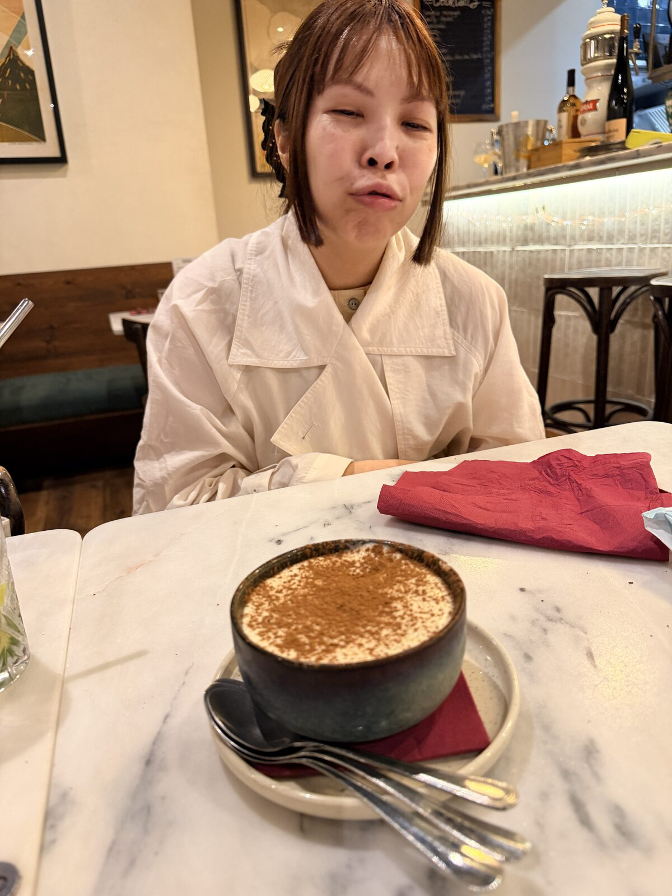
| 品項 | 價格 |
|---|---|
| Mojito Sin Alcohol | 6,00 € |
| Limonada | 3,20 € |
| Sofia 披薩 | 14,00 € |
| Tiramisu | 5,50 € |
| Total · Mesa 5 · 22:19 | 28,70 € |
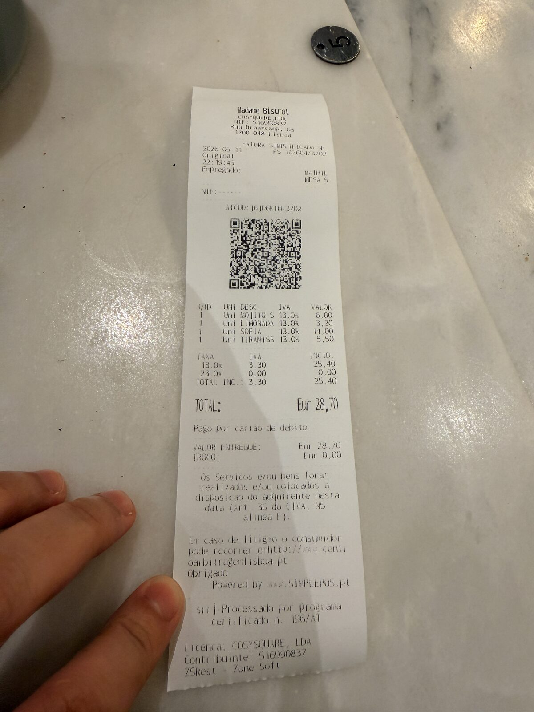
Day 8 從早上的王宮 3,418 房,到晚上的 Madame 5 號桌。一整天三餐的總帳:
| 餐 | 地點 | 金額 |
|---|---|---|
| 早餐 | (機場前/沒吃) | — |
| 午餐 | Faborit Plaza de España | 18,05 € |
| 午茶 | Le Coq · Barajas T2 | 11,35 € |
| 晚餐 | Madame Bistrot · Lisboa | 28,70 € |
| Total · 三人三餐 | 跨兩個國家 | 58,10 € |
對比 Day 7 三餐 95,80 €,Day 8 省了 37 €(≈ 1,300 NTD)。原因:
但這個省,某種程度上是 Day 8 的本質 —— 我們今天的核心不是吃,是移動。一個王宮、一個機場、一個跨海。馬德里收 95€/天的時候我們在巡禮,里斯本第一晚 28€ 的時候我們在到位。